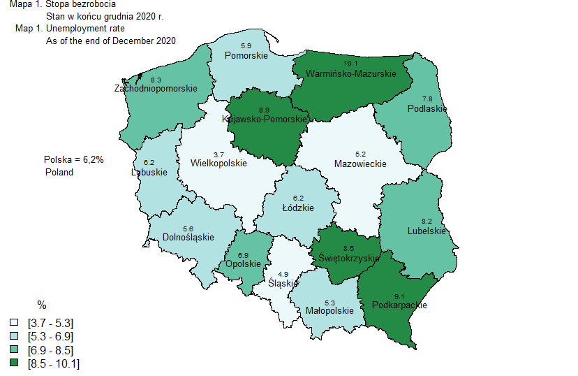

Edycja kartogramu
Na bazie kartogramu z części Tworzenie prostego kartogramu ćw.1, zmodyfikuj go dodając:
- tytuł wykresu,
- nazwy województw,
- wartości zmiennych,
- liczbę obiektów w legendzie.
Powtórzenie kodu z części Tworzenie prostego kartogramu ćw.1
woj<-read_sf("dane/gadm36_POL_1.shp")
unempl<-read_xlsx("dane/woj_un_rate.xlsx")
unempl$KOD_WOJ2<-substr(unempl$KOD_WOJ,1,2)
dane<-merge(woj,unempl,by.x="CC_1",by.y="KOD_WOJ2")
klasy<-classIntervals(dane$UN_RATE,n=4,style="fixed",fixedBreaks=c(3.7,5.3,6.9,8.5,10.1))
kolory<-brewer.pal(4,"BuGn")
kol_klas<-findColours(klasy,kolory)Do wyznaczenia współrzędnych centroidów województw stosujemy funkcje st_centroid oraz st_coordinates z pakietu sf
wsp<-st_coordinates(st_centroid(dane))Współrzędne te pozwolą nam nanieść etykiety województw w formie ich nazw i wartości analizowanej zmiennej.
par(mar=rep(0,4),mai=rep(0,4))
plot(dane["UN_RATE"],col=kol_klas, main="")
text(x=13,y=55,"Mapa 1. Stopa bezrobocia",cex=0.8)
text(x=14.15,y=54.8,"Stan w końcu grudnia 2020 r.",cex=0.8)
text(x=13.2,y=54.6,"Map 1. Unemployment rate",cex=0.8)
text(x=14.3,y=54.4,"As of the end of December 2020",cex=0.8)
text(x=13.3,y=52.4,"Polska = 6,2%",cex=0.8)
text(x=12.9,y=52.2,"Poland",cex=0.8)
text(x=wsp[,1],y=wsp[,2],labels=dane$NAME_1,cex=0.8)
text(x=wsp[,1],y=wsp[,2]*1.003,labels=dane$UN_RATE,cex=0.6)
legend("bottomleft",
c(paste0("[", klasy$brks[1], " - ", klasy$brks[2], "]"),
paste0("[", klasy$brks[2], " - ",klasy$brks[3], "]"),
paste0("[", klasy$brks[3], " - ",klasy$brks[4], "]"),
paste0("[", klasy$brks[4], " - ",klasy$brks[5], "]")),
fill=attr(kol_klas, "palette"), cex=1, bty="n",title = "%")